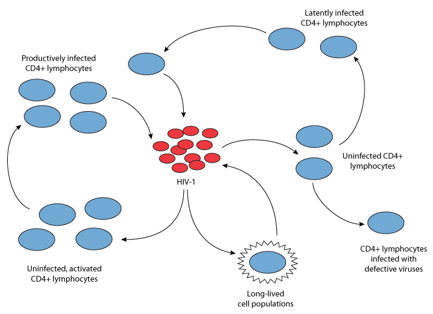
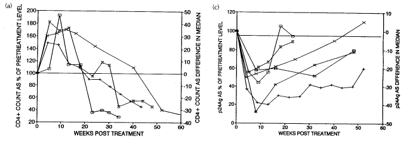
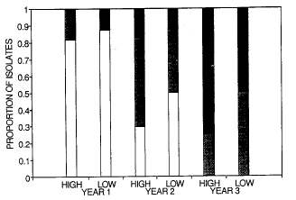
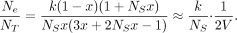
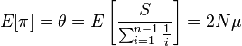
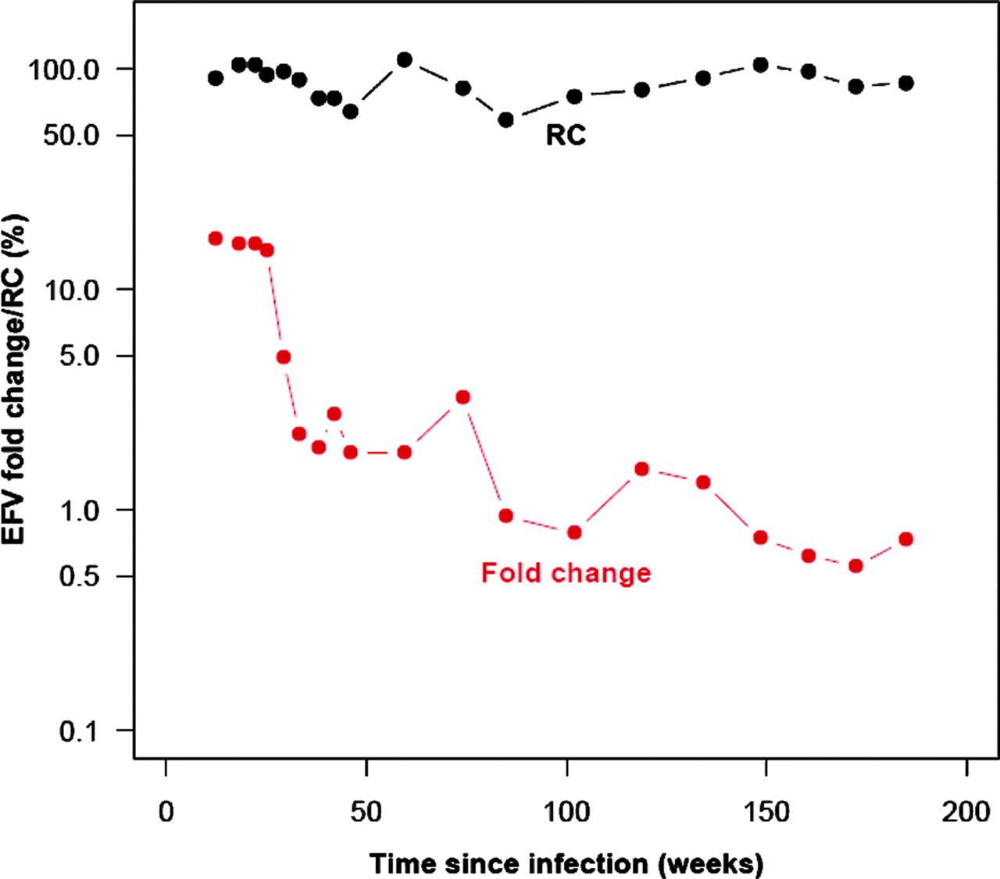
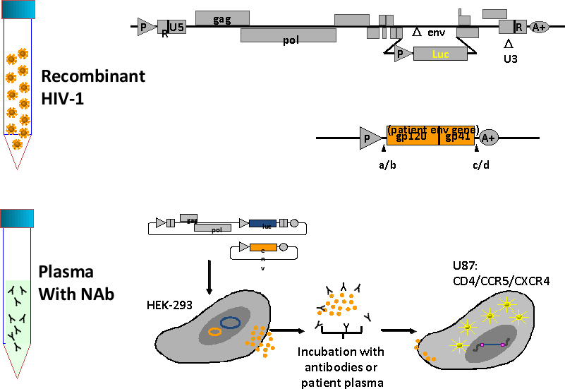
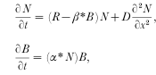
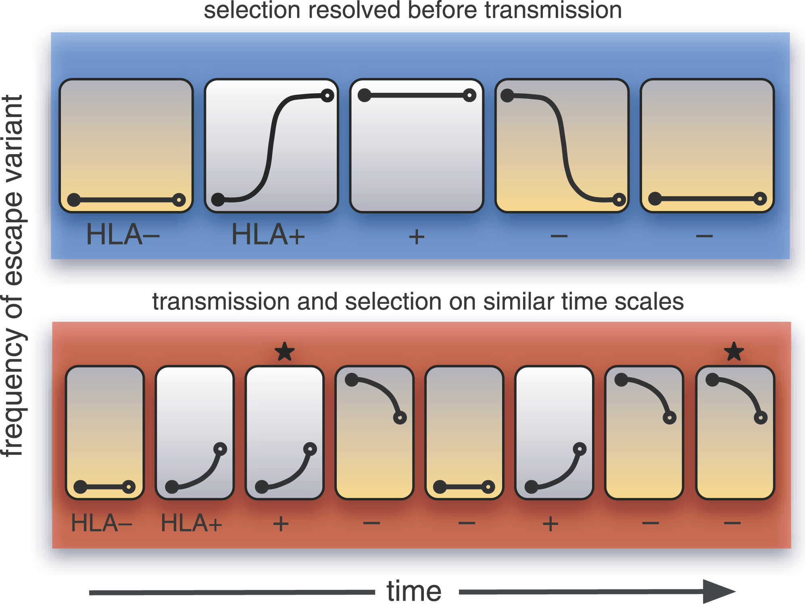

Multiscale modeling of HIV dynamics and evolution
Simon Frost, M.A. D.Phil.
Dept. of Veterinary Medicine, and Institute of Public Health
University of Cambridge

Why model?
- We often only have observational data
- Models allow us to ask 'what if?, and exploit 'natural experiments'
- Typically inexpensive
- Models make assumptions explicit
- Many researchers use models implicitly
- Most powerful when they make testable predictions or are just plain wrong
Why HIV?
Graphic: CBC Data:UNAIDS
HIV in the Philippines
Data: Philippines DoH, May 2015
HIV in the UK

PHE (2014) HIV in the United Kingdom
HIV drug resistance
- HIV treatment has reduced the number of deaths due to HIV
- However, treatment is associated with acquired drug resistance
- Emerges in response to therapy
- At the population level, we also observed transmitted drug resistance
- Individuals are infected with resistant virus
- We can sequence part of the viral genome to tell whether it is resistant or not
HIV is the most sequenced virus
HIV as a model evolutionary system
- In addition to there being a vast amount of data, HIV can also tell us about evolutionary processes
- HIV has a short generation time
- Population dynamics within the individual can occur on a short timescale
- HIV has a high mutation rate
- There is a large number of infected cells within a typical infected person
- HIV is measurably evolving
The within-host life cycle of HIV

Perelson (1996)
Multiple scales and HIV
- Within an infected cell
- Within pockets of target cells
- Within an organ
- Between organs
- Between pairs of individuals
- Within a population of individuals
- At the global level
Examples
- Evolution of drug resistance
- Evolution of immune escape
- Humoral responses
- Cellular responses
- Molecular epidemiology
Evolution of resistance to AZT
- AZT was the first antiviral agent to be licensed for treatment of HIV
- Although CD4+ counts recovered, the virus rebounded

McLean and Nowak (1992)
Resistance higher with higher doses

McLean and Nowak (1992)
Resistance and dose
Model from: McLean and Nowak (1992)
Stochastic versus deterministic
- Treatment response varies between individual
- Many biological models are deterministic in nature
- Model takes the form of differential equations
- Variability between individuals reflects biological variation
- Variation could arise simply through chance effects
Evolution of 3TC resistance
- 3TC or lamivudine was the second drug to be licensed
- High level resistance can be achieved through mutations at a single site in the reverse transcriptase

http://hivdb.stanford.edu/pages/3DStructures/rt.html
Evolution of M184I/V
Within-host evolution of M184

Frost et al. J. Virol. 2000
Rise of M184V

Frost et al. J. Virol. 2000
Mutation-selection balance
- Prior to therapy, resistant mutations exist at mutation-selection balance
- Population genetics theory tells us that there can be random fluctuations due to genetic drift
- The extent of these fluctuations can be captured by the concept of an effective population size or $N_e$
Fluctuations in M184V/I before therapy
Why stochastic?
- There are hundreds of millions of infected cells in a typical HIV-infected person
- How can stochasticity be important when the population size is so large?
Within host metapopulation dynamics

Frost et al. PNAS 2001
Model
- Implications:
- Repeated founder effects result in low effective population sizes

- Predictions:
- There should be fine-scale spatial structure
- Within subpopulations, there should be evidence of founder effects
Testing for spatial differentiation
- $F_{ST}$: the fraction of genetic variation within subpopulations relative to total variation
- Under a metapopulation model:
$$ F_{ST} = \frac{k+N_s x}{k(1+N_sx)} \approx \frac{1}{k} $$
Evidence for micro-scale spatial differentiation
| Patient | Pulps | Between-pulp variation | Total variation | FST |
|---|---|---|---|---|
| B | 3 | 1.453 | 2.446 | 0.594 |
| L | 4 | 0.836 | 2.266 | 0.369 |
| M | 2 | −0.041 | 2.380 | −0.017ns |
| N | 2 | 0.055 | 0.706 | 0.078 |
| P | 5 | 0.463 | 2.154 | 0.215 |
| S | 4 | 0.146 | 1.629 | 0.090 |
Testing for founder effects
- Under neutrality, for a constant population size at equilibrium:

- Tajima's D compares the estimates of $\theta$ obtained from pairwise distances and from segregating sites:
- $D<0$: e.g. population bottleneck
- $D=0$: e.g. constant population size
- $D>0$: e.g. population contraction
Evidence for local founder effects

Frost et al. (2001) PNAS
Transmission and reversion of drug resistance

Little, Frost et al. J. Virol. (2008)
Reversion of transmitted resistance

Little, Frost et al. J. Virol. (2008)
Resistant mutants are 'fit'

Little, Frost et al. J. Virol. (2008)
Summary
- Acquired resistance can emerge rapidly
- Pre-existing, but variable, resistant virus
- Decreasing wild-type viruses results in more target cells, facilitating the emergence of resistance
- Transmitted fitness may revert slowly
- Given rapid escape and slow reversion, we would expect transmitted resistance to be very common
- Transmitted resistance is rarer than expected, possibly due to lower transmission rates
Escape from immune responses
- In addition to selection by antiviral agents, there is also selection from the adaptive immune response
- Humoral (antibody) responses
- Cellular (cytotoxic T lymphocyte, CTL) responses
- What are the dynamics of escape within infected individuals?
- How is this affected by transmission between individuals?
Dynamics of antibody responses

Frost et al. Curr. Opin. HIV AIDS (2008)
Measuring antibody responses

Within-host antibody responses

Frost et al. PNAS (2005)
Variation between individuals

Frost et al. PNAS (2005)
Modelling escape from antibody responses
- It was long perceived that antibodies are ineffective in controlling HIV
- Some individuals do mount powerful responses
- Too little, too late

Haraguchi and Sasaki (1997)
Model results

Little, Frost et al. PNAS (2005)
Cross-reactivity and escape

Little, Frost et al. PNAS (2005)
Cellular responses
- Another important arm of the adaptive immune response is the cytotoxic T lymphocyte (CTL) response
- CTLs recognise infected cells, as these cells present viral peptides at their surface
- HIV can escape specific CTL responses through a small number of mutations
- On transmission with an escape mutant:
- Mutant will revert back to wild type (if mutant is not recognised)
- Mutant will remain (if mutant is recognised)
- These lead to complex dynamics, depending on the transmission rate
CTL responses and escape

Poon et al. PLoS Path 2007
Model predictions
- Evolution at the population level reflects the 'averaging' over multiple individuals
- Variation within the individual is affected by the transmission rate
Capturing selection pressure
- A common bioinformatic approach to detecting selection is to compare $dN$ and $dS$:
- $dN$: the rate of nonsynonymous or amino acid changing mutations
- $dS$: the rate of synonymous or amino acid preserving mutations
- The relative rates of $dN$ and $dS$ are informative about different types of selection
Capturing within- and between-host variation
- Between-host variation:
- $dN$ and $dS$ counted along the viral phylogeny
- Within-host variation
- Compare nonsynonymous and synonymous mixtures
What are mixtures?
- When we sequence a sample of blood from an infected person, we actually sequence a swarm of different variants
- Variation in this swarm can be detected by mixtures

Why are mixtures important?

Selection pressures within and between hosts

Poon et al. PLoS Path 2007
Selection on CTL epitopes

Poon et al. PLoS Path 2007
Conclusions
- Our ability to understand what goes on within the HIV infected individual is attributable to increased data
- Availability of therapy
- Sequence data
- Phenotypic data
- Modeling has moved from being 'data-free' to one which is data-intensive
- HIV evolution and dynamics occurs at the 'front line' within the individual, and variation at the population level reflects averaging over the selection pressures from many hosts